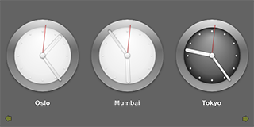

Qt Quick Demo - Clocks
A QML application that shows the current time in different cities.

Clocks demonstrates various QML and Qt Quick features such as displaying custom components.
Running the Example
To run the example from Qt Creator, open the Welcome mode and select the example from Examples. For more information, visit Building and Running an Example.
Files:
See also QML Applications.